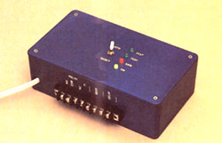
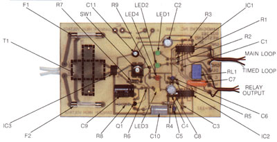
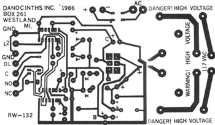
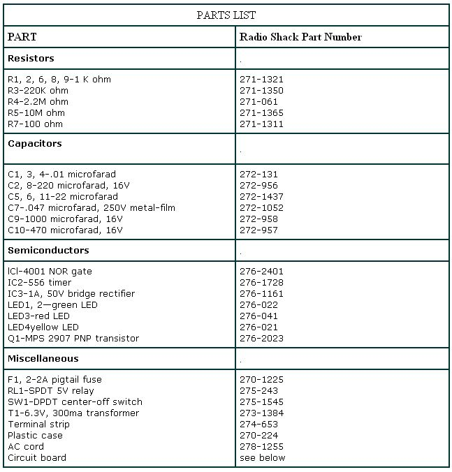

Statistics show that a house protected by an intrusion alarm is less likely to be burglarized than one that lacks such a device. And, beyond the personal security that a burglar alarm can provide for you and your family, many insurance companies offer reduced rates to homeowners who install them. In fact, some underwriters even demand that an alarm system be present before they'll issue a policy.
Recognizing that many of our readers would be interested in building their own effective, economical security alarm, we put electronics expert TJ Byers to work designing one. After several prototypes (the schematics for which would make your head spin), TJ has come up with an alarm that's relatively easy to assemble, inexpensive, and does the job.
Just because this is a comparatively simple device to build doesn't mean that it's a stripped-down, bare-bones alarm system. MOTHER's Security Alarm has features normally found only in more expensive security systems-including an adjustable exit and entrance timer, a built-in loop test circuit, an optional 12-volt triggered output, and a set of external relay contacts.
The exit timer allows you to set the alarm and leave through a protected door without tripping the alarm. The entrance timer is very similar to the exit timer, except that it allows you to enter the building through a selected door without triggering the alarm. Both timers are individually adjustable from a few seconds to several minutes-more than enough time for you to get your act together and make a graceful exit or entrance. If the system isn't secured within the specified time periods, a warning bell or siren sounds, thus preventing unwanted entry by persons not familiar with the disarming procedure.
The timed exit and entrance features save you the hassle of carrying a special alarm key. This approach is also more secure, because there's no key to lose or have stolen. Furthermore, only one portal is monitored by the exit and entrance timers. Should anyone attempt to enter through any other protected opening, the alarm would sound immediately.
MOTHER's Security Alarm includes another timer that resets the system five minutes after it's been triggered. The system can only be reset, however, if all the protection devices are intact and working. A faulty device or door that is left ajar locks out this timer, so the alarm will continue to sound until the situation is corrected.
MOTHER's Security Alarm is a wired alarm system. Such systems-as opposed to new wireless systems such as ultrasonic detectorshave been around for many years and have proved themselves very reliable.
Basically, the concept of a wired system is that of a sensor wire stretched around the perimeter of the area to be protected. The wire loop is routed so that it bridges doorways and crosses windows. A small current runs through the loop; as long as it isn't interrupted, the perimeter is secure. In this state, the alarm is in the standby, or armed, mode. Opening a protected door or window, however, interrupts the flow of current, which activates a relay in the alarm.
The heart of the security alarm is a system board that contains all the necessary electronics. While it is possible to construct the system board using different wiring techniques, I recommend that you use a printed circuit board. Printed circuit boards minimize wiring errors while providing a standard layout that has been proved stable and reliable. You can duplicate the circuit board yourself using the pattern shown in Fig. 1 (see issue 84, page 136 for instructions on making circuit boards), or purchase one from the supplier mentioned in the parts list.
To make your own, simply locate the parts according to the layout in the photo, and solder them in place. Pay particular attention to the polarity of the capacitors, LEDs, and integrated circuits. There are two ways in which they can be aligned with the holes in the board, but only one orientation is correct. Also note that the transformer is secured on the opposite side of the board from the other components.
The completed board mounts in a plastic box. The board rests parallel with the lid of the box, which becomes the front panel of the alarm. You'll need to drill five holes in the lid to accommodate the reset switch and the four indicator lamps. Fastening a terminal strip to the bottom of the case completes construction.
Installation consists of nothing more than running two loops of wire-one for the timed entry/exit and the other for the rest of the openings in your house-to and from the central controller. The main loop, of course, must include all parts of the perimeter to be protected.
Before beginning to wire your structure for alarm protection, take a few minutes to map out the areas to be protected. This step is particularly important because it forces you to consider the protected area as a whole. Look for all possible entrances from the outsideeven those that seem trivial, such as skylights-and place them on your map. At this time, you should also pick out the door you'll use for the timed entry, and consider carefully what the most practical (yet hidden) location for the central unit might be.
Once you have a plan, you'll need to decide which type of security device is right for each entrance. Doors, for example, require a reed switch-magnet combination. The sensor is a reed switch mounted to the door frame; a magnet to activate the switch attaches to the door. Only when the door is securely closed will the magnet engage the switch and complete the loop.
Windows can be protected using a number of devices, including reed switch/magnet combinations or microswitches. Adhesive foil or vibration sensors are often used to detect a broken window.
There's a broad selection of sensors and protection devices available, and each is specifically designed to fill a certain security need. Just make sure that the devices you use are of the normally closed type. That is, they form a complete circuit in the protected state and go open when disturbed.
After you have a map showing your security points, start from the central controller and draw a continuous line that connects all the points (except the timed door) and returns to the controller. Make the line as short as possible; it will actually become your loop wire, and planning will save you both effort and expense.
Wherever possible, hide the loop wires. The less obvious your installation is, the harder it will be for a would-be thief to defeat the system. Besides, there's no need to deface the decor of your building simply because you're installing a burglar alarm.
Finally, return the line to the controller. This is your security loop, with all points within the loop wired in series starting from the controller and returning to it. All devices within this loop are wired to the MAIN LOOP inputs.
The timed loop is wired in a similar fashion, but goes from the TIMED LOOP connectors out to your timed entry and back again.
The alarm has been simplified to the point where only a single control switch is needed to test and arm the system. This switch is located to the left of the indicator lamps. In the OFF position, the alarm is completely disabled. The center position of the control switch is used to TEST the security loops. A semiconductor indicator called an LED (Light Emitting Diode) is wired into each loop. When all security devices and the timed entry are in the "safe" state, both LEDs glow.
If there's a break in the system, though, one or both lamps will fail to light, and it will be impossible to arm the alarm until the break is closed.
The ARM position of the control switch actually turns the system on. Until this point, no amount of tugging on the sensors can make the system sound. Moving the switch from the TEST position to the ARM position starts the exit timer, which delays the actual arming of the system by 60 seconds. If all is secure after the 60-second time-out period, the alarm arms itself and begins the job of monitoring the perimeter.
A break in the main loop automatically trips the alarm. If this breach is secured, the alarm resets itself within five minutes, and the vigil begins anew. Entry through the timed door, however, initiates another sequence of events. A break in this loop starts an entrance timer. This feature gives you an opportunity to unlock the door, put down your packages, and still have time to reach the disarm switch before the alarm sounds. Failure to reset the alarm before the entry time expires triggers the alarm relay.
The relay contacts are wired so that there are several options to signal when the perimeter circuit has been broken. First, MOTHER's alarm contains a pair of uncommitted relay contacts. These contacts can be used to switch external devices on or off. Among the potential applications is the use of these contacts to turn on indoor room lights or outdoor floodlights. For the more sophisticated user, the relay contacts can be used to dial a telephone or activate other security devices.
In addition to the relay, the security system provides a triggered 12-volt output Vol tage. [EDITOR's NOTE: A separate 12-volt transformer and rectifier are required for this option.] The voltage is available only after the alarm is tripped and may be used to sound bells, sirens, or whistles. Anything that can be powered by 12 volts may be operated by this output.
MOTHER's Security Alarm is as electronically sophisticated as systems costing many hundreds of dollars more. By building it yourself, you can enjoy the personal satisfaction and the peace of mind of knowing your home is protected-and all for less than the price of an evening out!
EDITOR'S NOTE: We'll freely admit it, there's just no way we can fully detail a project of this magnitude in a few magazine pages. If you've dabbled in electronics before, we think you'll be able to build MOTHER's Security Alarm from the information in this article. (You experts can also obtain a schematic for free by sending your request and a self-addressed stamped envelope to TMEN Reader's Service, P.O. Box 70, Hendersonville, NC 28793.) If you're new to fiddling with circuits, however, a little more assistance might well be appreciated. Consequently, we're offering a set of plans for MO THER's Security Alarm that provides much more detail on points that were, because of space limitations, condensed in the article.
The plans are in 8" X 10" pamphlet format and include instructions for adjusting the exit and entry timers, troubleshooting the system, and wiring optional configurations for the alarm output. They also provide a comprehensive list of sensor devices normally used with closed-loop alarm systems, along with a list of retail suppliers, many of whom are willing to lend assistance should you run into problems. The plans will be available June 1, 1986, and you can get a set by sending $10 to MOTHER's Security Alarm Plans, P.O. Box 70, Hendersonville, NC 28793.
If you'd rather not be bothered with soldering irons, circuit boards, and the associated electronic hoopla and legerdemain, there's yet another option available. At the bottom of the parts list, you'll find information on ordering an assembled circuit board at a very reasonable price.
An etched and drilled printed circuit board is available from Danocinths, Inc., P.O. Box 261, Westland, MI 48185, for $17 postpaid. Request part number RW-132. A kit of parts (RW-132K) costs $44, and an assembled board (RW-132A) is $55. Please add $5 for shipping to the price of the kit or the assembled board. Also note that neither the kit nor the assembled board includes the case; installation in the case and wiring to sensors is required. Sensors are not supplied.
|
|
 |
 |
|
 |
 |
|